Capítulo 3 Gráficos en R
3.1 Gráficas en R base
R cuenta con un sistema de generación de gráficas poderoso y flexible. En este capítulo revisaremos como crear las gráficas más comunes con R base y luego un poco más complejas usando ggplot2 del tidyverse.
3.1.1 La función plot()
La función plot() es usada de manera general para generar gráficos. Esta función es muy especial porque depende del tipo de datos que le demos generará diferentes tipos de gráficos. El argumento principal que pide esta función es “x” también podemos poner “y”. Y depende de estos el tipo de gráfica que se generará. Diremos:
Continuo: Cuando nos referimos a un vector numérico, entero, lógico o complejo.
Discreto: Cuando nos referimos a un vector de factores o cadenas de texto.
| x | y | Tipo Gráfico |
|---|---|---|
| Continuo | Continuo | Dispersión /Scatter |
| Continuo | Discreto | Dispersión y coercionada a numérica |
| Continuo | Ninguno | Dispersión por número de renglón |
| Discreto | Continuo | Boxplot/Cajas |
| Discreto | Discreto | Mosaico |
| Discreto | Ninguno | Barras |
#Ejemplos
par(mfrow= c(2,3) )
plot(x=iris$Sepal.Length, y=iris$Sepal.Width)
plot(x=iris$Sepal.Length, y = iris$Species)
plot(x=iris$Sepal.Length)
plot(x = iris$Species, y = iris$Sepal.Length)
plot(x=iris$Species, y=iris$Species)
plot(x=iris$Species)
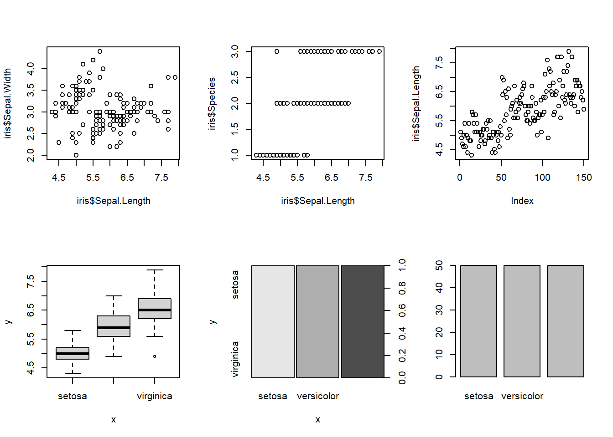
Además de estas, también hay otras funciones de Rbase que nos permiten graficar tipos específicos como son barplot(), boxplot() o hist().
3.1.2 Histrogramas
Los histogramas ya los vimos en el capítulo de estadísticos. Sabemos que nos permiten ver la distribución de nuestros datos (si son normales o no). Sin embargo, podemos usar más argmentos para darle formato, veamoslo con un ejemplo:
hist(x = iris$Sepal.Length, main = "Histograma de longitud de sepalo",
xlab = "Longitud", ylab = "Frecuencia",
col = "purple")
Como vemos en este ejemplo hay argumentos que aplicamos que puede ser aplicados para todos los gráficos de Rbase, tales como:
main : Titulo de la gráfica
xlab y ylab: Títulos de los axis x y y
col : color de las barras o gráfica.
3.1.3 Diagramas de dispersión
Estos diagramas nos son útiles para ver las relaciones que hay entre dos variables continuas. En el siguiente ejemplo veremos la relación entre las variables longitud y ancho del pétalo, pero en este caso los colorearemos por especies:
plot(x = iris$Petal.Length, y = iris$Petal.Width, col = iris$Species, xlab = "Largo", ylab = "Ancho")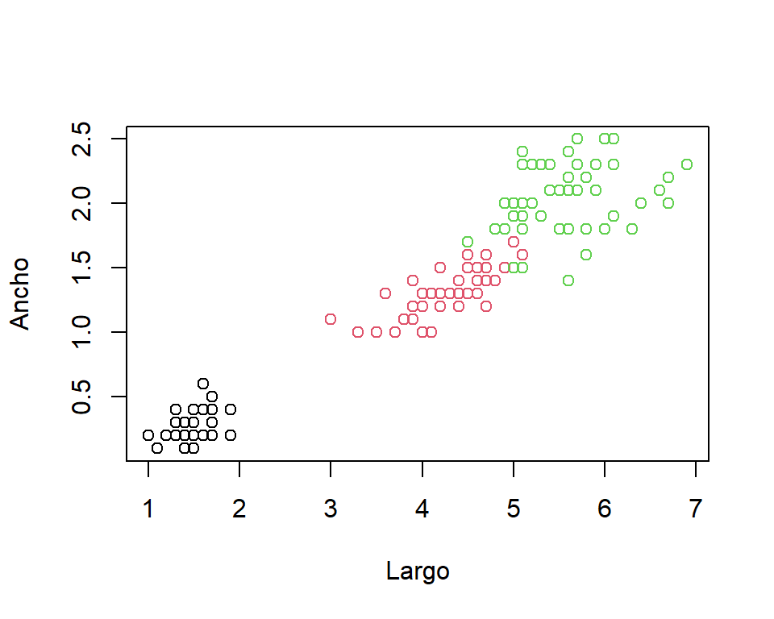
Si queremos agregar una leyenda a alguna de nuestras figuras de Rbase, usamos la función legend():
legend() siempre nos pide siempre los siguientes argumentos.
legend: Las etiquetas de los datos que queremos describir con la leyenda. Por ejemplo, si tenemos cuatro categorías a describir, proporcionamos un vector de cuatro cadenas de texto.fill: Los colores que acompañan a las etiquetas definidas conlegend. Estos colores tienen que coincidir con los que hemos usado en el gráfico.xyy: Las coordenadas en pixeles, en las que estará ubicada la leyenda. Podemos dar como argumento axalguno de los siguientes, para ubicar automáticamente la leyenda: “bottomright”, “bottom”, “bottomleft”, “left”, “topleft”, “top”, “topright”, “right”, “center”.title: Para poner título a la leyenda.
Veámoslo con el mismo ejemplo, primero ponemos plot() con la gráfica que queremos y debajo legend() para ponerlo encima de la figura que ya habíamos hecho:
3.1.4 Boxplots o diagramas de cajas
Los diagramas de cajas o boxplots son gráficos que nos muestran la distribución de una variable mostrando sus cuartiles (parte baja primer cuartil y parte alta tercer cuartil), de manera que podamos ver su distribución y simetría.
La línea horizontal media representa la “mediana” y las dos líneas verticales que muestran el valor máximo y mínimo.
Veamos un ejemplo:
plot(x=iris$Species, y = iris$Sepal.Length, xlab = "Especie", ylab = "Longitud Sépalo",
col = c("purple", "pink", "blue"))
También podemos usar la función boxplot(). En esta segunda forma de hacer diagramas de cajas necesitamos declarar dos argumentos principales:
formula: Para esta función las fórmulas tienen el formatoy ~ x, donde x es el nombre de la variable continua a graficar, y la x es la variable que usaremos como agrupación.data: Es el data frame del que serántomadas las variables.
Además declarar los demás argumentos extras como colores, títulos y demás.
boxplot(formula = Sepal.Length ~ Species, data = iris, xlab = "Especie",
ylab = "Longitud Sépalo", col = c("purple", "pink", "blue"))
3.1.5 Otros gráficos
Usando la función plot() podemos dibujar más gráficos de los vistos que son los estándares, como fue el caso cuando graficas modelos lineales.
También existe otro argumento de esta función que se denomina type y nos permite escoger otros tipos de gráficos.
Esto lo podemos ver usando el ‘?’
para ver la ayuda y los argumentos.
Son posibles los siguientes valores: “p” para puntos, “l” para líneas, “b” para puntos y líneas, “c” para puntos vacíos unidos por líneas, “o” para puntos sobretrazados y líneas, “s” y “S” para escalones y “h” para líneas verticales similares a histogramas.
Finalmente, “n” no produce ningún punto o línea.
Veamos algunos ejemplos:
#dataset de ensayo
df<- data.frame(x= c(1:5),
y= c(200, 400, 600, 700, 500))
par(mfrow = c(2, 3))
plot(df$x, df$y, type = "p", main = 'type = "p"')
plot(df$x, df$y, type = "l", main = 'type = "l"')
plot(df$x, df$y, type = "b", main = 'type = "b"')
plot(df$x, df$y, type = "c", main = 'type = "c"')
plot(df$x, df$y, type = "s", main = 'type = "s"')
plot(df$x, df$y, type = "h", main = 'type = "h"')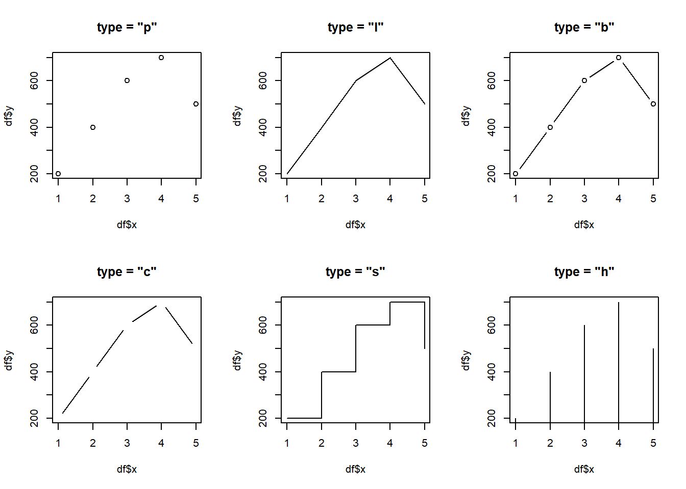
Ahora bien, en cuanto a líneas podemos escoger el tipo de línea con el argumento lty:
par(mfrow = c(2, 3))
plot(df$x, df$y, type = "l", lty=1, main = 'type = "l1"')
plot(df$x, df$y, type = "l", lty=2, main = 'type = "l2"')
plot(df$x, df$y, type = "l", lty=3, main = 'type = "l3"')
plot(df$x, df$y, type = "l", lty=4, main = 'type = "l4"')
plot(df$x, df$y, type = "l", lty=5, main = 'type = "l5"')
plot(df$x, df$y, type = "l", lty=6, main = 'type = "l6"')
3.1.6 Barplots o gráficas de barras
Las gráficas de barras nos permiten ver los valores de una manera diferente a las líneas:
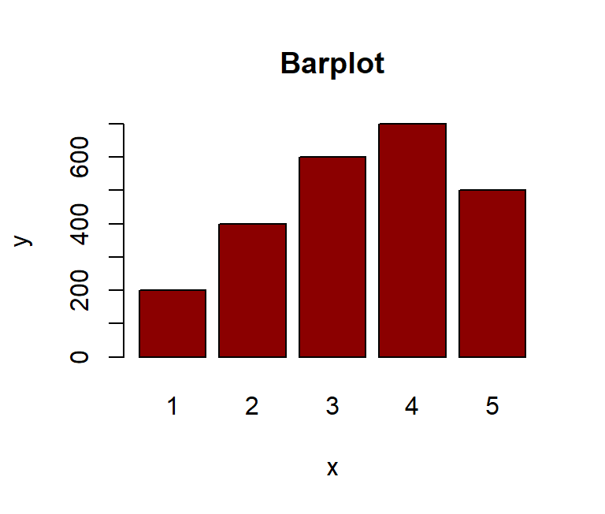
También hay capas que podemos agregarle a las gráficas, como la capa text o la capa abline para agregar texto y líneas sobre la gráfica, por ejemplo:
3.2 Gráficas con ggplot2()
Las gráficas con ggplot2() es quizás de las cosas más poderosas y atractivas de R si lo comparamos con otros lenguajes y/o programas. ggplot2 es generalmente más intuitiva porque usa una gramática de gráficos además de ser visualmente agradable.
La limitación de ggplot2 es que está diseñado para trabajar exclusivamente con tablas de datos en formato tidy (donde las filas son observaciones y las columnas son variables). Sin embargo,ya vimos en anteriores temas cómo podemos convertir nuestras tablas para que tengan este formato.
Para usar ggplot2, tendrán que aprender varias funciones y argumentos. Estos son difíciles de memorizar, por lo que les recomendamos que tengan a mano la hoja de referencia de ggplot2. Pueden obtener una copia en línea o simplemente realizar una búsqueda en internet de “ggplot2 cheat sheet.” y econtraran algo como esto:
O también en este link: cheaseet, donde podrán ver además estas hojas con indicaciones de otros paquetes de R que nos facilitarán un poco más las cosas.
Es fácil de usar, pero puedes crear figuras complejas con una sintaxis bastante simple.
“gg” significa gramática gráfica - Significa que se superponen diferentes capas de objetos y elementos sobre los anteriores para generar la figura.
En esta parte se repasará las diferentes características de ggplot2:
geomas o “geoms”
escalas o “scales”
guías o “guides”
temas o “theme”
facetas o “facets”
El primer paso para aprender ggplot2 es poder separar un gráfico en componentes. Las figuras aquí, se construyen por capas. Los tres componentes principales para considerar son:
Data: nuestro set de datos o dataframe
Mapeo estético o ‘aes’: El gráfico usa varias señales visuales para representar la información proveída por el set de datos. Las dos señales más importantes en este gráfico son las posiciones de los puntos en el eje-x y el eje-y.
Geometría: Nos indica el tipo de gráfica a realizar. Unas posibles geometrías son diagrama de barras, dispersión, histograma, densidades suaves (smooth densities en inglés), gráfico Q-Q y diagrama de cajas.
Elementos adicionales: temas, guías, colores, etc.
Para esta parte usaremos como ejemplo el set de Datos de “ToothGrotwth” de nuevo y contruiremos por partes la gráfica.
3.2.1 ggplot
El primer paso para crear un gráfico ggplot2 es definir un objeto ggplot.
Hacemos esto con la función ggplot, que inicializa el gráfico.
Esta parte podemos hacerla evaluando dentro de la función o usando el pipe, así:
data("ToothGrowth")
library(dplyr)
library(ggplot2)
ggplot(data = ToothGrowth)
ToothGrowth %>% ggplot()El código crea un gráfico, en este caso una pizarra en blanco ya que no se ha definido la geometría. La única opción de estilo que vemos es un fondo gris.
También dentro de esta capa de ggplot() se declara algo que se conoce como mapeo estético que describe cómo las propiedades de los datos se conectan con las características del gráfico.
En otras palabras, más coloquiales, qué con qué graficamos, también podemos colocar aquí si queremos colorear o llenar un factor.
Por ejemplo, con la data de ToothGrowth, queremos graficar el tamaño o longitud de los dientes versus la dosis aplicada y destacando o coloreando el método de aplicación de la vitamina C.
Aquí ya vemos que el eje x y el eje y ya aparecen con nombres de las variables, pero aún no nos muestra ningún gráfico, esto es porque no le indicamos aún que geometría o qué tipo de gráfico queremos.
3.2.2 Geometrías
Esta es la siguiente capa en ggplot2.
Los nombres de las funciones de geometría siguen el patrón: geom_$ donde $ es el nombre de la geometría.
Algunos ejemplos incluyen geom_bar, geom_point y geom_histogram.
Digamos que queremos ahora sí dibujar la gráfica del paso anterior pero usando puntos, para esto usamos la geometría geom_point .
Luego de cada capa de ggplot2 en vez de usar pipe usamos el signo + y así vamos agregando cada capa.
Ahora sí podemos ver lo que queríamos, cómo lucen los datos de longitud en cada dosis aplicada destacando o coloreando el modo de administración. Si en vez de puntos quisieramos, líneas, pues sólo cambiamos la capa de geometría:
También podemos combinar lo visto en tidyverse con ggplot2 por ejemplo si queremos hacer un boxplot o barplot debemos cambiar la variable de dosis para hacerla discreta en vez de numérica o continua.
ToothGrowth %>% mutate(dose=case_when(
dose==0.5~"D0.5",dose==1~"D1", dose==2~"D2")) %>% ggplot(
aes(x = dose, y = len, color=supp)) + geom_boxplot()En el caso de geom_bar debemos cambiar y poner más argumentos, por ejemplo, como las barras son huecas en vez de usar ‘color’ usamos ‘fill’ y dentro de la geomtría escogemos una stat y una position , esto es para indicar cómo estarán las barras ubicadas y representadas.
Los argumentos más usados para barras tradicionales los presento a continuación:
ToothGrowth %>% mutate(dose=case_when(
dose==0.5~"D0.5",dose==1~"D1", dose==2~"D2")) %>% ggplot(
aes( x = dose, y = len, fill=supp)) + geom_bar(stat = "identity", position = "dodge")Podemos también agregar más de una capa de geometría y así hacer gráficas combinadas, por ejemplo:
ToothGrowth %>% ggplot(aes(x = dose, y = len, color=supp)) +
geom_point()+
geom_text(aes(label=rownames(ToothGrowth)))+
geom_line()En la gráfica pasada combinamos tres geometrías, puntos, texto y línea. De esta forma podemos hacer gráficas más elaboradas y mejor representadas.
3.2.3 Colores, títulos, escalas y otros ajustes.
Hasta ahora hemos construido gráficas con ggplot2() declarando el mapa estético y las diferentes geometrías.
Sin embargo podemos notar de todas nuestras figuras anteriores que lucen muy parecidas en formato, mismos colores, mismo fondo y demás.
Todos estos parámetros podemos modificarlos para personalizar nuestras figuras.
3.2.3.1 Colores
ggplot2() tiene su escala personalizadas de colores, como lo vimos anteriormente.
Sin embargo esto podemos cambiarlo usando una capa denominada scale_color_$, tomando $ varias formas, como scale_color_manual(), scale_color_continuous(),scale_color_discrete(), scale_color_brewer() , entre otros.
Todas estas opciones son depende de nuestro tipo de datos o del tipo de escala que queremos utilizar.
Para declarar los colores en R podemos utilizar los nombres de los colores inglés como lo hicimos en la parte de R base o usando el formato de colores de html.
También hay muchas paletas de varios paquetes ya definidas como la de RColorBrewer y viridis.
Para buscar los colores en formato html pomos usar el siguiente link: html-colors. El código html se ve de esta manera:
Y de esta manera los declaramos en nuestra gráfica usando scale_color_manual():
ToothGrowth %>% mutate(dose=case_when(
dose==0.5~"D0.5",dose==1~"D1", dose==2~"D2")) %>% ggplot(
aes(x = dose, y = len, col=supp)) + geom_boxplot()+
scale_color_manual(values = c("#FF00FF","#00FFFF"))
Ahora bien, como les mencioné anteriormente los diagramas de cajas y barras son elementos huecos entonces cuando indicados col lo que realmente coloreamos son los bordes, pero si queremos colorear las cajas adentro debemos usar fill como usamos en el geom_bar(), pero, en este caso en vez de usar scale_color_$, usamos scale_fill_$ y de esta manera podemos reemplazarlo por todas las opciones anteriormente mencionadas:
ToothGrowth %>% mutate(dose=case_when(
dose==0.5~"D0.5",dose==1~"D1", dose==2~"D2")) %>% ggplot(
aes(x = dose, y = len, fill=supp)) + geom_boxplot()+
scale_fill_manual(values = c("#FF00FF","#00FFFF"))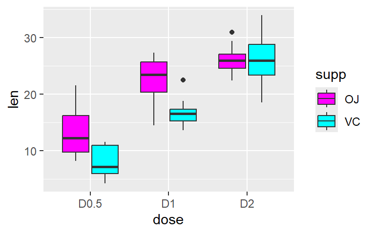
Ahora, si dudamos mucho o no estamos seguros de cómo escoger los colores, podemos utilizar paletas de colores ya determinadas como las que mencioné RColorBrewer y viridis. Estas son las paletas de RColorBrewer y viridis:
 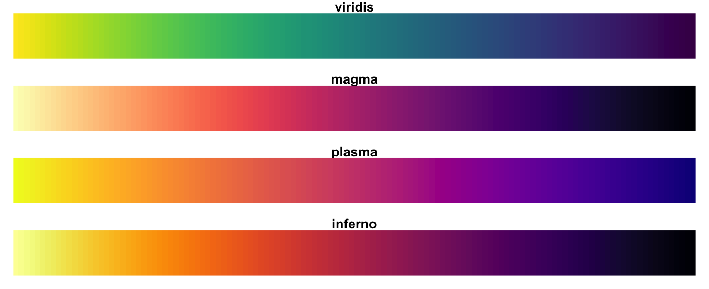
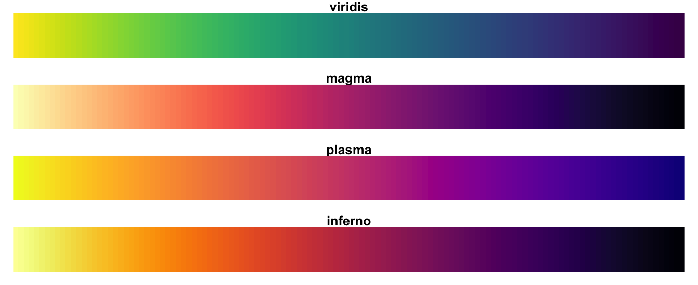
Y así las podemos usar:
ToothGrowth %>% mutate(dose=case_when(
dose==0.5~"D0.5",dose==1~"D1", dose==2~"D2")) %>% ggplot(
aes(x = dose, y = len, fill=supp)) + geom_boxplot()+
scale_fill_brewer(palette = "Dark2")ToothGrowth %>% mutate(dose=case_when(
dose==0.5~"D0.5",dose==1~"D1", dose==2~"D2")) %>% ggplot(
aes(x = dose, y = len, fill=supp)) + geom_boxplot()+
scale_fill_viridis_d(option = "C")
Entonces para brewer ponemos el nombre de la paleta que queremos uscar y el viridis ponemos la opción de paleta que queremos: “magma” (o “A”), “inferno” (“B”), “plasma” (“C”), “viridis” (“D”, default) and “cividis” (o “E”).
3.2.4 Escalas
Para establecer o cambiar las escalas de nuestra figura usamos las funciones scale_x_discrete() o scale_y_continuos()dependiendo del tipo de datos que tengamos (cotinuos o numéricos y discretos o categóricos) en cada axis (x o y) y.
ToothGrowth %>% mutate(dose=case_when(
dose==0.5~"D0.5",dose==1~"D1", dose==2~"D2")) %>% ggplot(
aes(x = dose, y = len, fill=supp)) + geom_boxplot()+
ylab("Longitud diente")+
xlab("Dosis")+
ggtitle("Longitud de dientes por Dosis aplicada") +
scale_x_discrete(limits = c("D2", "D0.5", "D1"), position ="bottom" )+
scale_y_continuous(breaks = c(0, 20,40), limits = c(0,40), labels = c("L0", "L20", "L40"))Como vemos, podemos explorar y probar diferentes parámetros para cambiar en el eje x y en el eje y sin tener que modificar nuestros datos sino solamente para ser graficado.
3.2.5 Otros ajustes
Hay otros ajustes más geneales o específicos que podemos realizar a nuestros gráficos.
Por ejemplo, los temas.
ggplot2() usa como default el tema theme_grey() pero hay otros que podemos usar para cambiar el formarto de nuestras figuras.
Veamos algunos ejemplos:
## Warning: package 'cowplot' was built under R version 4.3.2##
## Attaching package: 'cowplot'## The following object is masked from 'package:lubridate':
##
## stamp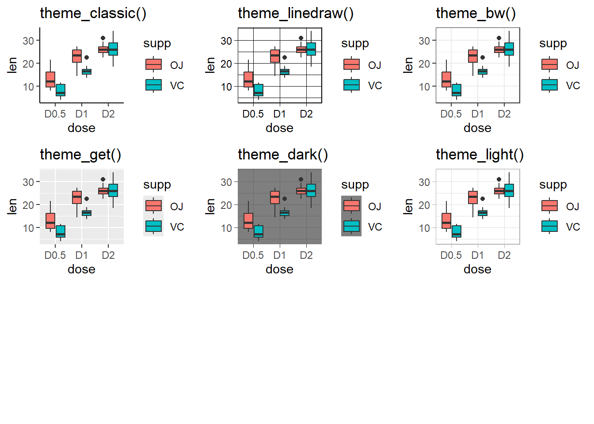
Y así muchos otros más, los podemos explorar dando theme_ y usando la tecla TAB para ver las demás opciones que nos aparecen.
Otros ajustes más específicos como tamaño y color de letras, posición de la leyenda, entre otros, los hacemos usando la capa denominada theme().
Vamos a dar un ejemplo de cómo hacer esto, pero para usar thene() es todo un capítulo muy extenso para entrar en detalles, si queremos conocer muchos de estos detalles hacemos ?theme() y nos depliega la página de ayuda y veremos los argumentos posibles.
3.3 Figuras Multi-panel / Facets
Para dibujar varias figuras en una misma página o output hay varias estrategias. Varias de ellas están fuera del alcance de este curso, pero para mencionarlas:
3.3.1 Facets
Esta forma de graficar en multi-panel es quizás la más sencilla por ser una capa de ggplot2(). Para esta hay dos funciones facet_grid()y facet_wrap(). Los trataremos como ejemplos porque en detalle no son del alcance del presente curso.
Para facet_grid() hay dos opciones, presentarla por columnas o por filas:
ToothGrowth %>% mutate(dose=case_when(
dose==0.5~"D0.5",dose==1~"D1", dose==2~"D2")) %>% ggplot(
aes(x = dose, y = len, fill=supp)) + geom_boxplot()+
facet_grid(supp~.)
ToothGrowth %>% mutate(dose=case_when(
dose==0.5~"D0.5",dose==1~"D1", dose==2~"D2")) %>% ggplot(
aes(x = dose, y = len, fill=supp)) + geom_boxplot()+
facet_grid(.~supp)Y con facet_wrap() podemos combinar columnas y filas, por ejemplo:
3.4 Extras
3.4.1 stat_summary() y stat_smoot()
Esta es una capa que nos permite poner desviaciones estándar o líneas que representan el promedio de los datos, por ejemplo:
ToothGrowth %>%
ggplot(aes(x = dose, y = len)) +
stat_summary(geom = "line", fun = mean, aes(group = supp, color = supp), size = 1.2) +
stat_summary(geom = "errorbar", fun.data = mean_se, aes(group = supp), width = 0.1)## Warning: Using `size` aesthetic for lines was deprecated in ggplot2 3.4.0.
## ℹ Please use `linewidth` instead.
## This warning is displayed once every 8 hours.
## Call `lifecycle::last_lifecycle_warnings()` to see where this warning was generated.stat_smooth() nos permite colorear o resaltar la línea que representa nuestro modelo lineal:
ggplot(iris, aes(x = Petal.Width, y = Sepal.Length)) +
geom_point() +
stat_smooth(method = "lm", col = "red")## `geom_smooth()` using formula = 'y ~ x'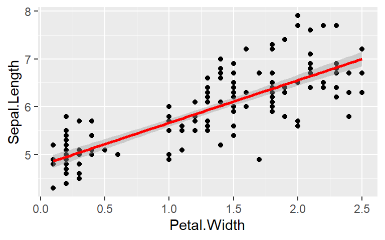
3.4.2 ggpubr()
ggpubr() es una paqutería tipo compatible con ggplot2() pero un poco más fácil de declarar y más intuitivo.
Veamos algunos pocos ejemplos de sus utilidades:
library(ggpubr)
ggboxplot(ToothGrowth, x = "dose", y = "len", color = "dose",add = "jitter", shape = "dose")

Vemos que los parámetros se definen similarmente pero con algunas diferencias, además que nos permite agregarles más elementos sin agregar más capas.
Y el ‘output’ o tipo de gráfica es igual del tipo ggplot2().
Otras funciones interesantes de este paquete son facet.by que es un argumento que puede ser declarado dentro de la función principal y nos permite hacer las gráficas multi-panel y otro que es muy útil es el de stat_compare_means() que nos permite agregar una capa que hace análisis estátidísticos como t.test, wilcoxon, kruskal.walis, anova, entre otros y que nos evita hacer análisis fuera y que podamos agragarlas a la gráfica en un sólo paso.
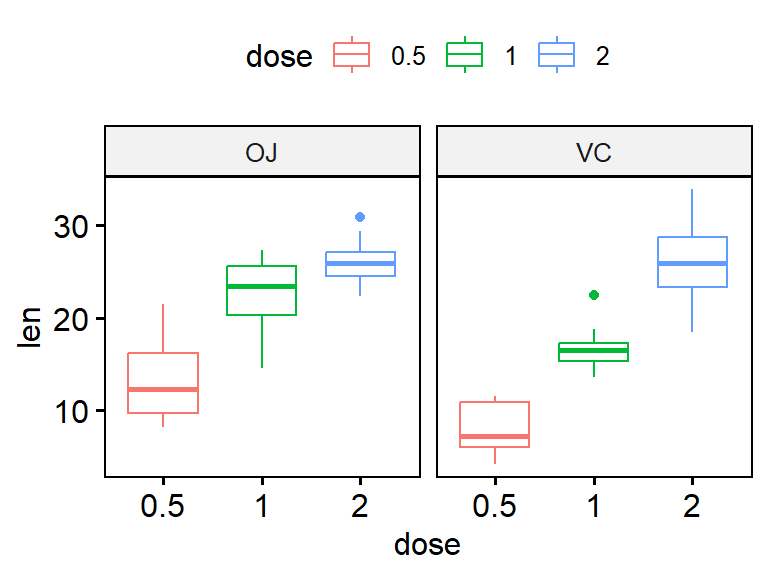
comparaciones <- list( c("0.5", "1"), c("1", "2"), c("0.5", "2") )
ggbarplot(ToothGrowth, x = "dose", y = "len", fill = "dose", add = "mean_sd")+
stat_compare_means(comparisons = comparaciones, label = "p.signif")
3.4.3 Misceláneos: ggcats()10
ggplot2() nos permite usar diversos paquetes desarrollados por muchos usarios con fines divertidos o misceláneos, podemos verlo en el pie de página el link para explorar todos los que hay. Veremos ggcats(). Estas son las opciones que podemos usar:
# install.packages("magick")
# remotes::install_github("R-CoderDotCom/ggcats@main")
library(ggcats)
grid <- expand.grid(1:5, 3:1)
df <- data.frame(x = grid[, 1],
y = grid[, 2],
image = c("nyancat", "bongo",
"colonel", "grumpy",
"hipster", "lil_bub",
"maru", "mouth",
"pop", "pop_close",
"pusheen", "pusheen_pc",
"toast", "venus",
"shironeko"))
ggplot(df) +
geom_cat(aes(x, y, cat = image), size = 5) +
geom_text(aes(x, y - 0.5, label = image), size = 2.5) +
xlim(c(0.25, 5.5)) +
ylim(c(0.25, 3.5))
Entonces, por ejemplo si queremos usarlos como puntos de nuestra gráfica, sería algo así:
#hacemos la variable cats para escoger los que queremos
ToothGrowth$cats <- factor(ToothGrowth$dose,
levels = c(0.5,1,2),
labels = c("mouth", "grumpy", "pusheen_pc"))
ToothGrowth %>% ggplot(aes(y = len, x = dose)) +
geom_cat(aes(cat = cats), size = 4) + xlim(c(0.25, 2.25))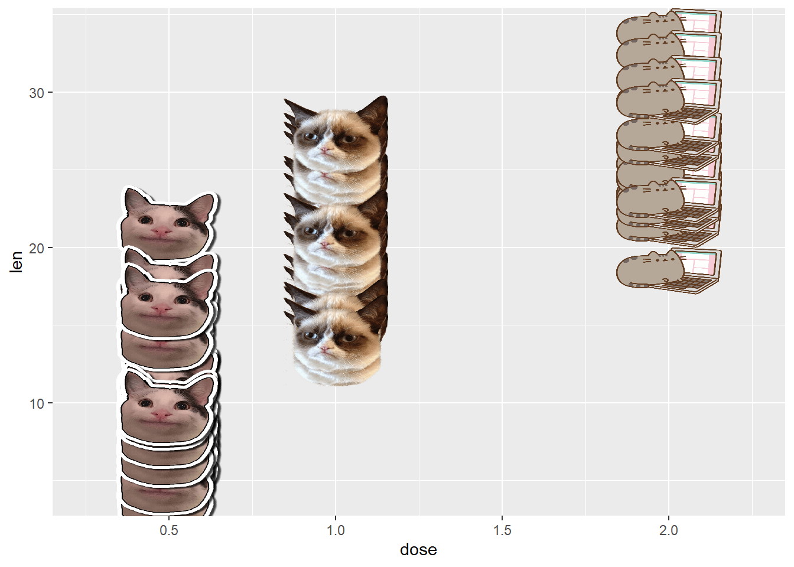
3.4.4 Misceláneos: ggtexttable()
Esta función me permite hacer mis tablas como figuras que puedo exportar como imágenes y darle formato. Hace parte del paquete ggpubr() que vimos anteriormente.
Haremos un ejemplo con los primeros cuatro datos de iris:
También podemos cambiar el tema con el que se formatea la tabla, por ejemplo:

Para ver otros temas: https://rpkgs.datanovia.com/ggpubr/files/ggtexttable-theme.pdf
Otros formateos:
Poner en negrita una celda:
Resaltar una columna:
Poner títulos y pies de notas: